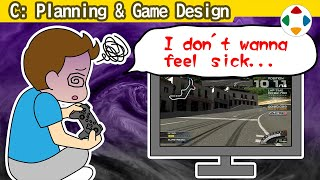
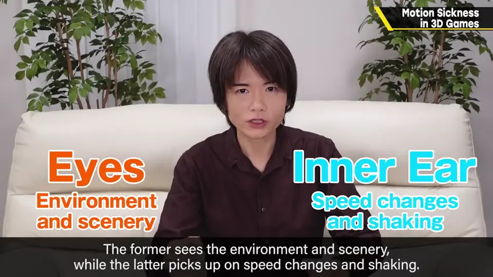
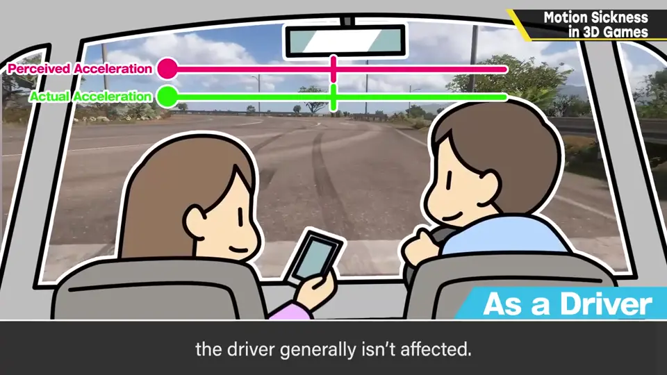
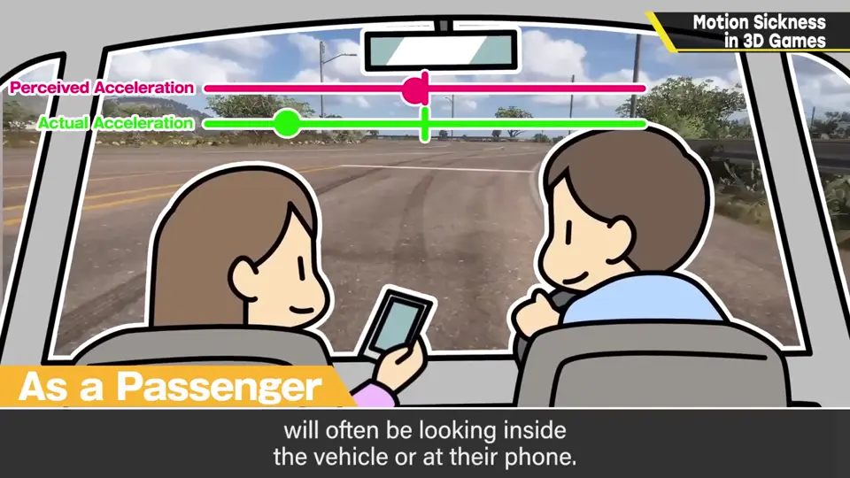
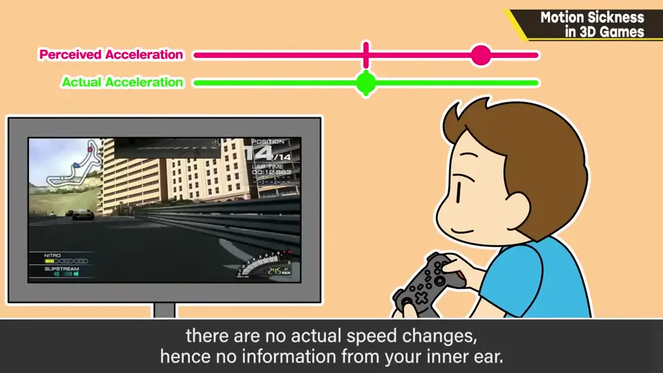
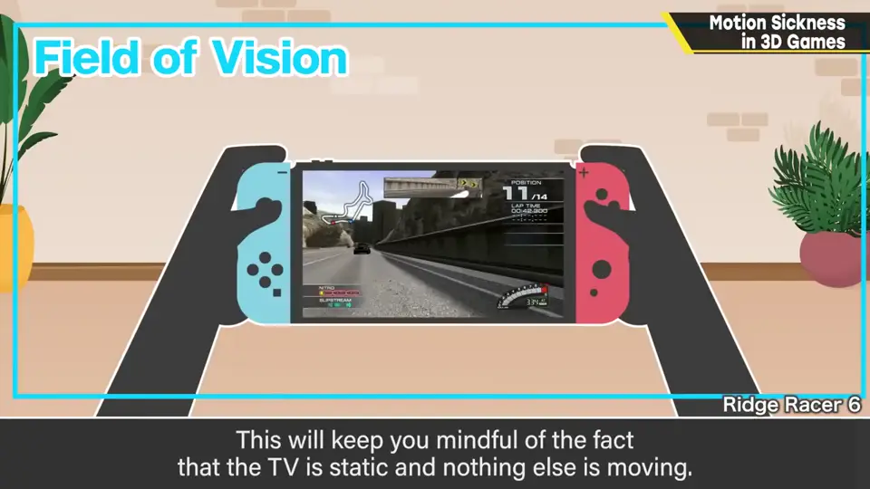
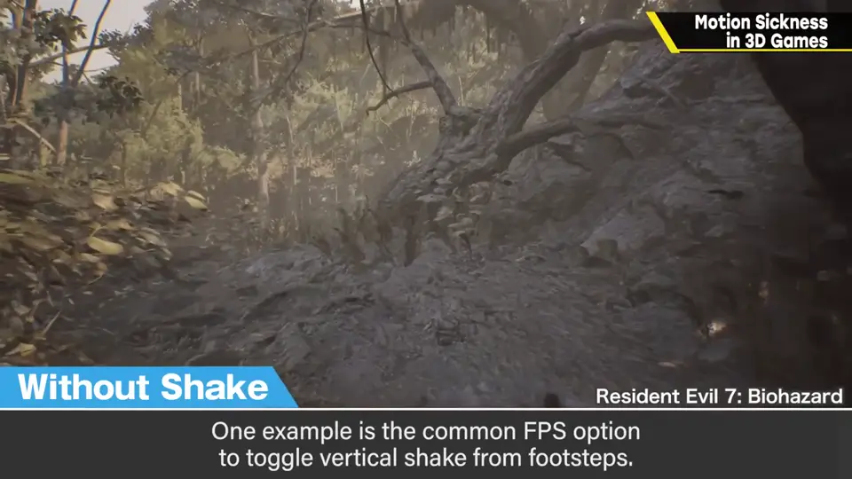
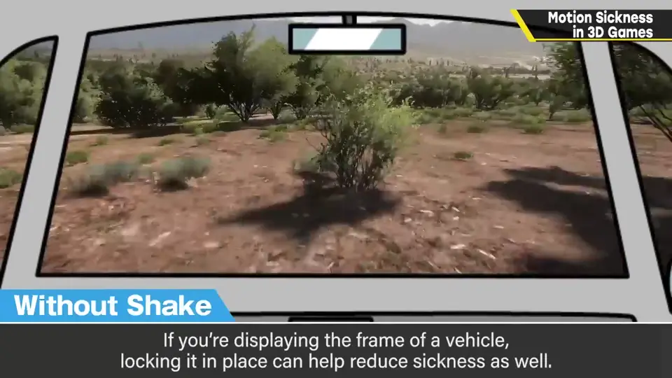
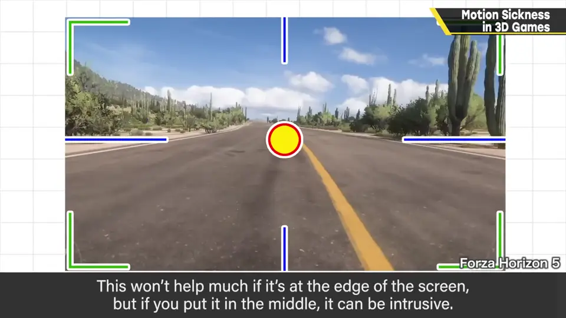

速览
玩 3D 游戏有时会晕得厉害。个人差异大，樱井比较不晕，玩几个小时都还好，但不适应的人真的很难受。游戏晕与晕车原理相同但作用相反：原理是眼睛的信息（风景）与内耳的信息（加减速、摇晃）之间的矛盾。晕车时，司机不太晕——能配合弯道和上下动作；乘客常看车内墙壁或手机，视野信息与无关的加速度不符而晕，所以才说晕了就看远处。游戏中实际没加速，内耳没信息，画面里却有剧烈惯性般的动作，这种矛盾让人晕。玩家想尽量防 3D 晕：稍微扩大视野可能有效，意识到电视外面是不动的（但太投入就难了）；晕车药对游戏也可能有效；压力和疲劳影响很大，应避免长时间游玩。游戏规格上能做的：首先控制演出，例如 FPS 常见的步行上下晃动选项，关掉很有效；描绘载具框架时把框架固定在画面上（而不是随着身体动），就不容易晕。当然演出越少越不有趣——不晕的镜头就是没演出的镜头。增加「画面其实是固定的」的信息也可能有效：放在画面角落效果弱，放在中间又碍事。包括演出规格在内，准备一些防晕选项是可行的。无论如何，开发团队里若没有会 3D 晕的人，连测试都做不了——个人差异太大了。
1. 晕的原理 0:03
玩 3D 游戏时，有时会晕得很厉害。这有个人差异：樱井比较不会晕，玩几个小时都还好，但不适应的人真的很痛苦。
游戏晕和晕车原理相同但作用相反。原理是眼睛传来的信息与内耳传来的信息之间的差异：前者是风景景色，后者是加减速和摇晃——两者矛盾就会晕。

2. 晕车 vs 游戏晕 0:41
晕车时，司机不太会晕，因为能配合弯道和上下起伏；而司机以外的人常看车内墙壁或手机——眼前的视野信息与无关的加速度不符，于是晕了。所以才有人说晕车就看远处。



游戏则相反：实际上没有加速，内耳没有信息；但画面里却出现带有剧烈惯性的动作，这种矛盾让人晕。所以也许有人坐车更晕，也有人玩游戏更晕。
3. 玩家能做什么 1:28
- 稍微扩大视野可能有效：意识到电视以外的地方是不动、固定的（不过太投入游戏就很难）；
- 其实晕车药对游戏也可能有效，可以试试；
- 压力和疲劳影响很大，应避免长时间游玩。

4. 开发者能做什么 2:00
游戏规格上能做的，首先是控制演出。例如 FPS 常见的「步行上下晃动」选项，关掉它很有效。


描绘载具框架时，把框架固定在画面上，就不容易晕——不是随身体关节晃动，而是相对画面纹丝不动。
当然演出越少就越不有趣——不晕的镜头就是没有演出的镜头。另外，增加「画面其实是固定的」这一信息也可能有效：放在画面角落效果弱，放在中间又碍事。

自测题
1. 3D 晕的原理是什么？与晕车有何不同？
眼睛与内耳信息的矛盾；晕车是有加速度而视觉不符，游戏是画面有动作而内耳无感觉，作用相反。 0:21
2. 玩家可以如何减轻 3D 晕？
稍微扩大视野、意识到电视外是静止的；试试晕车药；避免长时间游玩、减少压力与疲劳。 1:28
3. 开发方有哪些防晕手段？
控制演出（如可关闭步行晃动）、把载具框架固定在画面上、增加画面固定的信息、提供防晕选项。 2:00